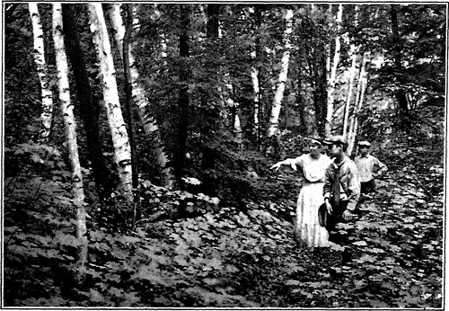

Features And Furnishings. Part 2
Description
This section is from the book "The Natural Style In Landscape Gardening", by Frank A. Waugh. Also available from Amazon: The Natural Style in Landscape Gardening.
Features And Furnishings. Part 2
Sometimes these collections of plant materials may be turned to a special purpose and become thereby new sources of interest and pleasure. For instance, a bird garden. Persons who are fond of flowers and of gardens (and not too fond of cats), are apt to be fond of birds also. The cultivation of birds opens up new and interesting possibilities in gardening. There will be plantings of viburnum, roses, mulberries and other materials on which the birds feed; there will be bird baths; there will be picturesque little bird houses; and, most interesting of all, will be the birds themselves. If one can have in one's garden a catbird and a thrush, a humming bird, two robins and a song sparrow, it will prove a great addition to the columbines and sweetpeas.
A bird sanctuary is obviously a very appropriate feature for the grounds designed in the natural style.
And speaking of birds we should pause to emphasize the fact that any living moving animals in a garden or park add enormously to the general interest. The old English parks often had deer running at large. I once counted three hundred beneath the dining-room window of an English country house. A few sheep on a park lawn will be photographed hundreds of times every week, thus demonstrating their pictorial appeal. Some, Jersey cows are almost as good. Most park superintendents try to have a variety of water fowl— ducks, geese and swans—on their park lakes. AH this is perfectly good landscape gardening.
Then there is the garden theater or players' green. Most of the outdoor theaters recently constructed in America have been of the emphatically formal extremely architectural type. They have often been called "Greek" theaters. But neither the Greek theater nor the garden theater need be characteristically architectural. The classic Greek plays were probably presented originally amidst very informal surroundings, under the trees, on bits of fortuitous lawn, or even in the street. The architectural Greek theater and the big Roman circus belong to a later and possibly less artistic period.
Certain it is that the modern outdoor theatricals which have been most successful have been very informally presented amidst characteristically informal garden surroundings. In this list would come the famous performances of the Ben Greet Players, the Coburn Players, etc. In the same connection it is to be remarked that the many successful pageants given in America of late years have nearly all been staged in landscape settings of the most pronounced informality. These facts are pertinent and important.
As a problem in garden design, it is wholly feasible to make a garden theater or players' green of the most informal character. It may be fitted so snugly into the garden or into the woods or against the stream bank that every one would suppose it to be wholly the work of nature herself. There is not space here to discuss the whole complicated technic of outdoor theater design; but it is a matter which the proficient landscape gardener may be expected to understand and to practice. So here is another feature of vital human interest which may add to the charm of the naturalistic garden.
Another special feature which seems peculiarly appropriate to the naturalistic park or garden is the campfire. The campfire is a peculiarly American motive, associated with our long years of pioneering.
From the Atlantic to the Pacific our civilization has been carried forward by a long relay of campfires. Thousands of men and women now living unsuspected in the haunts of urban luxury have taken their turns beside the evening blaze or cooked their ration of bacon in the frying pan. That was a shrewd observation made by David Harum at Newport when he offered to bet a quarter that, on the shore drive, he could make one-half the millionaires duck their heads by shouting suddenly "low bridge!" Even those who have not personally lived the camp life have had father or mother or uncle whose stories of the early days have fired the ten-derest springs of imagination.
Moreover camping, even where it has long been given up as a mode of life, persists as a glorious and popular sport. Thousands of men and women go camping annually for their vacations to the Adirondacks, to Canada, to the Rocky Mountains; and there, during the happiest days of all the year, they sit and smoke and dream and cook by the birchwood blaze. The great majority of sound, healthy and really cultivated persons in this country know something from personal experience of the campfire's charms. It is not hard to believe that such persons would find a garden campfire on their own grounds an appealing reminiscence of happy experience.
The garden has long been recognized as a happy blend of those great elements of earth, air (or sky), plant life and water. The practical necessity of water in some form in every garden has been overlooked at times, particularly in America, and particularly by designers in the American natural style. Just here they lost a point to the formal designers who nearly always found room for some fountain or pool. Now in this blend of elements fire may have its place as well as earth and sky and water, and its human appeal is just as primitive and just as strong.
Fire indeed is the one of these elements which has oftenest been worshipped by men. Even the professors of the purer and more spiritual religions have frequently used fire in their sacrifices and ceremonials; and the flame upon the altar or upon Hie domestic hearth still appeals to us as a definite expression of divine mercy.
A GARDEN CAMPFIRE. THE AUTHOE's GARDEN.
Planned, executed and photographed by the Author.
MOUNTAIN TRAIL.
Photograph by the Author.
Continue to: